Cómo usar este manual
Manual del puesto de Encargado/a de Depósito y Logística. Organiza las tareas por función, con independencia de quién ocupe el puesto. Usá la rutina diaria como punto de entrada y abrí únicamente la ficha que necesitás.
Versión de trabajo 0.2 · 25/09/2026 · Base documental: relevamientos hasta el 24/09/2026. Requiere validación del responsable del área y de Gerencia antes de adoptarse como procedimiento vigente.
Las fichas describen el circuito relevado. Las propuestas están identificadas como tales. Los datos, clientes y cantidades de las capturas son ejemplos históricos: nunca se copian a una operación nueva.
Las capturas se revisaron por muestreo visual y se contrastaron con las guías existentes; no equivalen a una reproducción y transcripción completa de cada video. Tocá una imagen para verla a tamaño original.
Qué hace el puesto
Coordina el trabajo del depósito y mantiene alineados el pedido físico, la documentación y el stock del sistema. Prepara la información para el equipo, resuelve faltantes, registra movimientos y libera la documentación del despacho.
| Actividad | Responsabilidad |
|---|
| Pedidos y prioridades | Encargado/a: prepara la hoja, comunica prioridades y resuelve incidencias. |
| Aprobación para preparar y salir | Administración, Gerencia o Dirección. Un aviso del vendedor no sustituye la aprobación. |
| Picking y empaque | Operarios. El puesto coordina y recibe el resultado. |
| Control del pedido y de la carga | Controlador. Desde el 24/09 el Encargado/a entrega la documentación y no ejecuta el control de carga habitual. |
| Faltantes y cliente | Encargado/a investiga e informa; Ventas define con el cliente la solución comercial. |
| Facturas y notas de crédito | Administración. Las devoluciones corresponden a otra área y no son una tarea de este puesto. |
| Ajustes de stock | Encargado/a ejecuta la diferencia física validada con autorización de Gerencia. |
El respaldo documentado del Controlador cubre solo la emisión de remitos. No se debe asumir que cubre preparación en BBJet, ajustes, reposición o administración de planillas.
Rutina diaria en una página
| Momento | Qué comprobar | Ficha |
|---|
| Inicio | Accesos disponibles; pedidos aprobados; forma de envío; prioridades. | P01 y P02 |
| Durante el armado | Consultas de ubicación; faltantes; reemplazos; cambios de prioridad. | P03 y P04 |
| Pedido controlado | Hoja física completa; cantidades reales; pedido correcto en BBJet y PalJet. | P05 |
| Antes de la salida | Remito; cliente; transporte; bultos; autorización de salida. | P06 |
| Cuando llega mercadería | Origen/destino; códigos y cantidades; diferencias pendientes. | P07 |
| Cierre | Pedidos en espera; incidencias abiertas; registros actualizados; orden del depósito. | P10 |
Secuencia habitual: aprobación → hoja con ubicaciones → picking por operarios → control → empaque → carga digital y remito → liberación → control de carga y despacho.
Checklist para arrancar el día
Empezá por P01: abrí los sistemas, actualizá la planilla y verificá las aprobaciones. Después seguí P02 para entregar al equipo la hoja con ubicaciones, envío y prioridad.
Ir a P01 — Accesos y aprobaciones
Ir a P02 — Hoja de picking y organización
Marcá las casillas mientras trabajás. Las marcas son una ayuda temporal: se reinician al recargar la página y no constituyen un registro de autorización o ejecución.
P01 Abrir el día y liberar pedidos
Cuándo usar esta lista: Al inicio y cada vez que se aprueba un pedido.
Antes de empezar: PalJet, Excel de autorización de salida y canal de avisos.
Fase 1: Abrir y actualizar
Fase 2: Verificar la autorización y el pedido
Fase 3: Dejar el pedido listo para preparar
Listo cuando: La nota correcta y autorizada está disponible para preparar la hoja.
Si algo no coincide: No iniciar picking si falta aprobación o hay duda sobre el pedido. Consultar al aprobador.
Ver la fuente del procedimiento
Auditoría T-01/T-02; LB-PRO-001 LOG-01; video de notas de pedido.
P02 Preparar la hoja y ordenar el trabajo
Cuándo usar esta lista: Por cada pedido liberado.
Antes de empezar: Nota de pedido, Excel de picking por sectores y forma de envío aprobada.
Fase 1: Preparar la hoja de picking
Fase 2: Organizar el trabajo del equipo
Listo cuando: El equipo tiene una hoja identificada, ubicaciones, envío y prioridad.
Si algo no coincide: Consultar una ubicación dudosa; no inventarla. El criterio completo de prioridad y capacidad debe validarse.
Ver la fuente del procedimiento
Auditoría T-03/T-04; LOG-02. Falta video del Excel de ubicaciones.
P03 Investigar un faltante y un reemplazo
Cuándo usar esta lista: Cuando una línea vuelve en cero o un artículo no aparece.
Antes de empezar: Hoja física, PalJet, planillas de pallets y remitos de proveedor, WhatsApp de movimientos.
Fase 1: Buscar y confirmar
Fase 2: Resolver el faltante
Listo cuando: La cantidad física o el faltante quedó confirmado y la hoja expresa lo que realmente se entregará.
Si algo no coincide: No ajustar stock para evitar una búsqueda ni asumir equivalencia por parecido. Derivar códigos dudosos al responsable del maestro y decisiones comerciales a Ventas.
Ver la fuente del procedimiento
Auditoría T-05/T-06; LOG-06 y LOG-08; lineamientos de racks.
P04 Pedir reposición al depósito externo
Cuándo usar esta lista: Cuando los faltantes necesitan reposición.
Antes de empezar: Cuadernillo de faltantes y planilla de pallets externos.
Fase 1: Preparar la reposición
Fase 2: Coordinar y hacer seguimiento
Listo cuando: La reposición está solicitada y Ventas conoce el faltante.
Si algo no coincide: Si el pallet no está identificado, resolver su contenido antes de pedirlo como si estuviera confirmado.
Ver la fuente del procedimiento
Auditoría T-07; LOG-08. Registro digital propuesto en formularios.
P05 Pasar el pedido físico al sistema y remitar
Cuándo usar esta lista: Después del control y empaque.
Antes de empezar: Hoja con cantidades reales, reemplazos y bultos; accesos propios a BBJet y PalJet.
Fase 1: Verificar y cargar en BBJet
Fase 2: Pasar la orden a PalJet
Fase 3: Emitir y revisar el remito
Listo cuando: El comprobante existe, coincide con lo preparado y el remito correcto está disponible.
Si algo no coincide: La grabación de pre-remito no prueba el resultado posterior a la confirmación. Falta un video completo del remitaje final. No repetir una emisión sin comprobar primero si ya se registró.
Ver la fuente del procedimiento
Auditoría T-08; LOG-06; guías BBJet, pre-remito y ajuste.
P06 Liberar el despacho
Cuándo usar esta lista: Cuando se organiza la salida de pedidos.
Antes de empezar: Remitos, bultos, hoja de control y autorización de salida.
Fase 1: Definir qué sale
Fase 2: Preparar y entregar la documentación
Listo cuando: El Controlador tiene la documentación correcta y los pedidos en espera quedaron identificados.
Si algo no coincide: No incluir en la carga un pedido sin confirmación. Resolver diferencias entre etiqueta, bultos y remito antes de liberarlo.
Ver la fuente del procedimiento
Auditoría T-09; LOG-07; observación del 24/09.
P07 Registrar movimientos entre depósitos
Cuándo usar esta lista: Cuando hay un traslado de mercadería.
Antes de empezar: Origen, destino, códigos, cantidades y documentación del movimiento.
Fase 1: Identificar y preparar el movimiento
Fase 2: Cargar los datos
Fase 3: Verificar antes de confirmar
Listo cuando: El movimiento validado se registró en ambos depósitos y la planilla quedó actualizada.
Si algo no coincide: Investigar diferencias en el historial por fecha y depósito y solicitar recuento físico. El control de recepción propuesto figura en formularios.
Ver la fuente del procedimiento
Auditoría T-11; tres guías de Remito Interno. Diferencia de alcance de ajustes pendiente de validar.
P08 Mantener ubicaciones y datos del depósito
Cuándo usar esta lista: Cuando cambia una ubicación o aparece una caja no registrada.
Antes de empezar: Código, descripción, cantidad física, ubicación y registros del depósito.
Fase 1: Confirmar la información
Fase 2: Actualizar y comunicar
Listo cuando: Los registros reflejan la ubicación comprobada y el equipo conoce el cambio.
Si algo no coincide: Si el código no se identifica, no elegir uno parecido. Falta confirmar el criterio completo para altas y el responsable de cambios al maestro.
Ver la fuente del procedimiento
Auditoría T-13/T-14; relevamiento del 23/09.
P09 Gestionar agregados a pedidos cerrados
Cuándo usar esta lista: Cuando se solicita agregar mercadería a un paquete cerrado.
Antes de empezar: Pedido/remito relacionado y decisión de Ventas o del responsable correspondiente.
Si piden un agregado después del cierre
Listo cuando: La decisión sobre el agregado quedó comunicada y vinculada al pedido.
Si algo no coincide: No adoptar las variantes informales como autorización general. Falta formalizar el circuito único de agregados.
Ver la fuente del procedimiento
LOG-09; auditoría T-10. Alcance corregido por el usuario: devoluciones de otra área.
P10 Supervisar el cierre y entregar pendientes
Cuándo usar esta lista: Al final de la jornada.
Antes de empezar: Estado de pedidos, faltantes, movimientos e incidencias.
Fase 1: Dejar los pendientes registrados
Fase 2: Dejar el depósito listo
Listo cuando: El depósito está ordenado y los pendientes se pueden retomar al día siguiente.
Si algo no coincide: Informar a Gerencia las incidencias que bloqueen la próxima jornada.
Ver la fuente del procedimiento
LOG-11 y lineamientos. Registro de entrega de pendientes propuesto.
Anexo temporal de regularización
Carga de pallets pendientes de la mudanza. Esta tarea debe retirarse de la rutina cuando termine la regularización.
- Tomar un pallet pendiente del registro de backlog.
- Cargarlo de a uno usando el circuito documentado de movimientos; no agrupar pallets si eso suma códigos y pierde trazabilidad.
- Comparar códigos y cantidades con la planilla del pallet.
- Investigar las diferencias mediante historial y verificación física. No tratar una planilla histórica como prueba suficiente ante una diferencia actual.
- Marcar el pallet terminado y actualizar lo que queda pendiente.
Fuente: auditoría T-12. Falta confirmar cuántos productos quedan y el criterio vigente para resolver discrepancias.
Ingreso de importaciones pendiente de completar
El puesto tiene participación declarada en la verificación contra Packing List y el ingreso de mercadería. La documentación general menciona descarga, bultos, embalaje, comparación con Packing List e ingreso a stock, pero las notas de campo indican que los pallets externos se conservan tal como llegan. No existe un circuito detallado y consistente para formar a un reemplazo.
- Relevar una recepción completa con el responsable del puesto.
- Identificar quién descarga, quién cuenta, quién valida diferencias y quién autoriza el alta.
- Grabar la pantalla de ingreso y los campos obligatorios con un caso permitido.
- Confirmar dónde se archivan Packing List, remitos y diferencias.
- Separar el alta del artículo de la asignación de precios, que el relevamiento comercial atribuye a Dirección.
No ejecutar un alta o ingreso nuevo únicamente con este apartado. Es una ficha de relevamiento pendiente, no un procedimiento completo.
G01 Buscar e imprimir una nota de pedido
Antes de imprimir, aplicar la aprobación de P01. Imprimir no aprueba un pedido.
1. Definir el rango de fechas
Abrir la búsqueda de comprobantes y colocar las fechas de la nota.
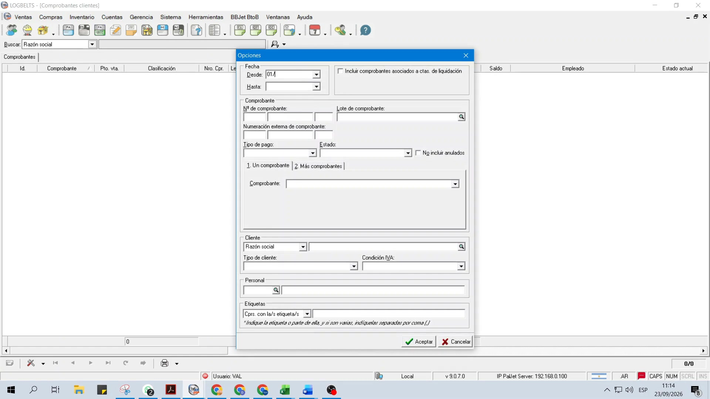
Busqueda e impresion de notas de pedido.mp4 · 00:02 · Captura de referencia, clic para ampliar.2. Elegir Nota de pedido
Elegir el tipo de comprobante. Verificar el estado con el circuito vigente.
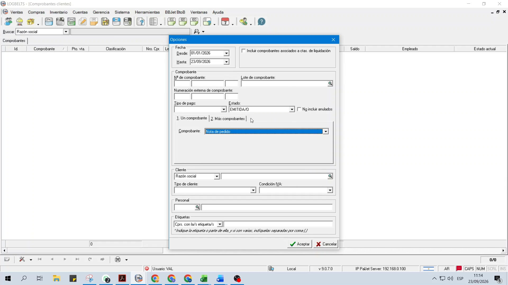
Busqueda e impresion de notas de pedido.mp4 · 00:11 · Captura de referencia, clic para ampliar.3. Seleccionar el pedido correcto
Comparar número, fecha y cliente. Abrir la impresión desde el menú contextual.
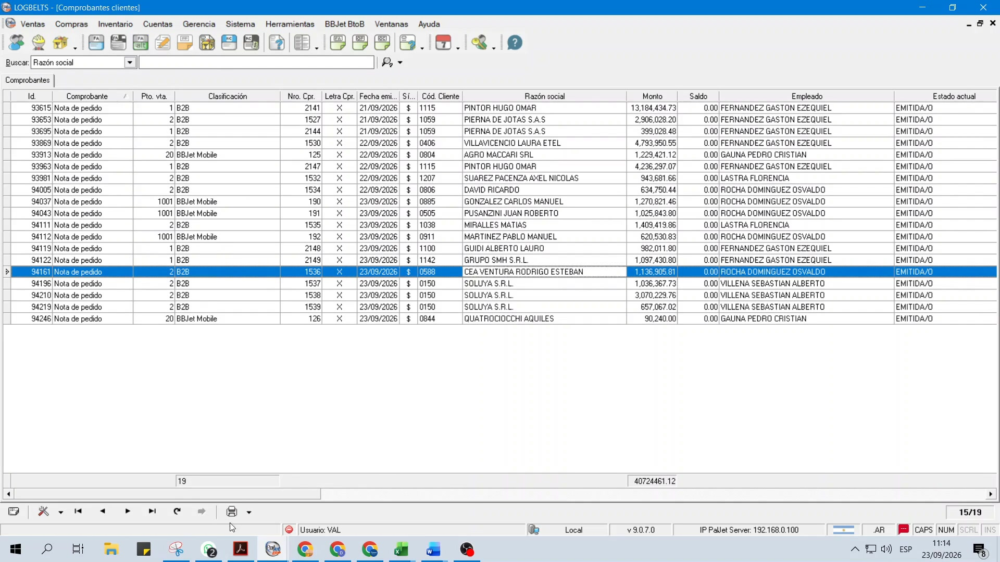
Busqueda e impresion de notas de pedido.mp4 · 00:17 · Captura de referencia, clic para ampliar.4. Confirmar la impresión
Revisar impresora, páginas y copias. Aceptar únicamente para la fila verificada.
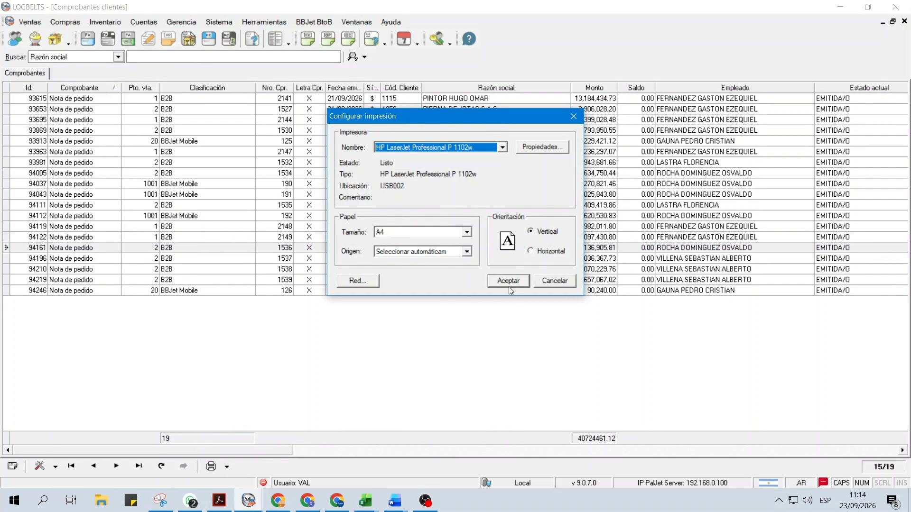
Busqueda e impresion de notas de pedido.mp4 · 00:22 · Captura de referencia, clic para ampliar.Abrir video completo
G02 Cargar cantidades reales en BBJet
El código se genera cerca de 05:10–05:25 del video. El cierre aparece hacia 06:35–06:52; no se ve la verificación posterior. Completar P05 para la emisión y el remito.
1. Revisar la carga inicial
Comparar Cant. a cargar con Cant. cargada y la hoja física. Completar todos es solo una base si hay parciales.
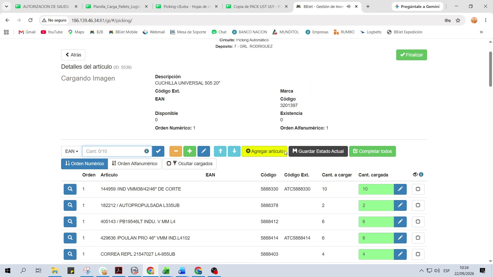
PreRemito_carga_picking_con_actualizacion_del_stock.mp4 · 00:33 · Captura de referencia, clic para ampliar.2. Editar un artículo
Seleccionar el renglón y usar el lápiz azul para editar la cantidad.
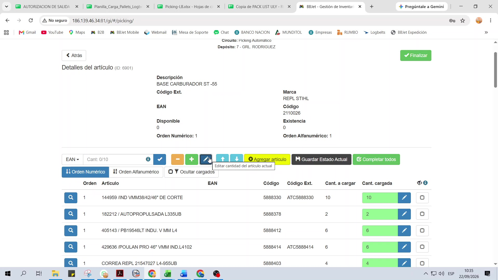
PreRemito_carga_picking_con_actualizacion_del_stock.mp4 · 01:31 · Captura de referencia, clic para ampliar.3. Ingresar lo realmente preparado
Cargar cero si no sale ninguna unidad o la cantidad parcial correcta. Aceptar y repetir para todos los faltantes.
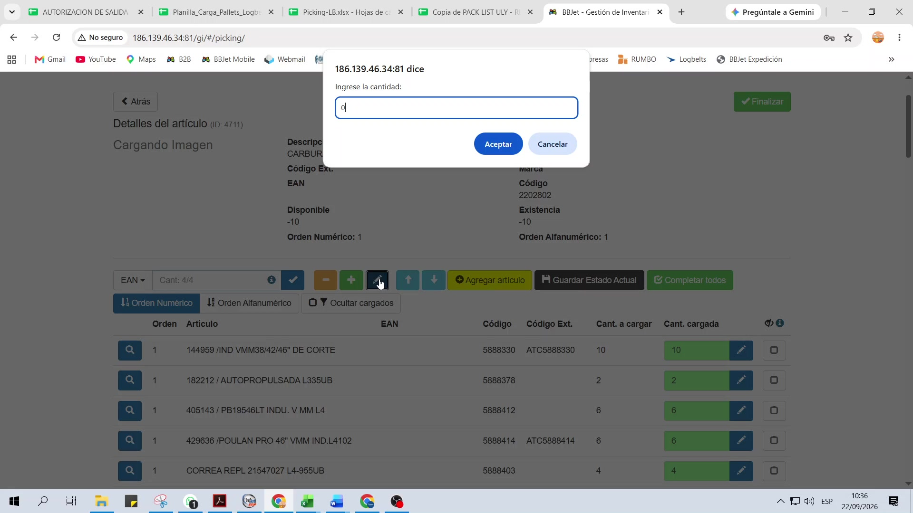
PreRemito_carga_picking_con_actualizacion_del_stock.mp4 · 02:37 · Captura de referencia, clic para ampliar.4. Revisar antes de finalizar
Comprobar toda la lista, incluidos agregados y reemplazos. Después finalizar y conservar el código de la orden.
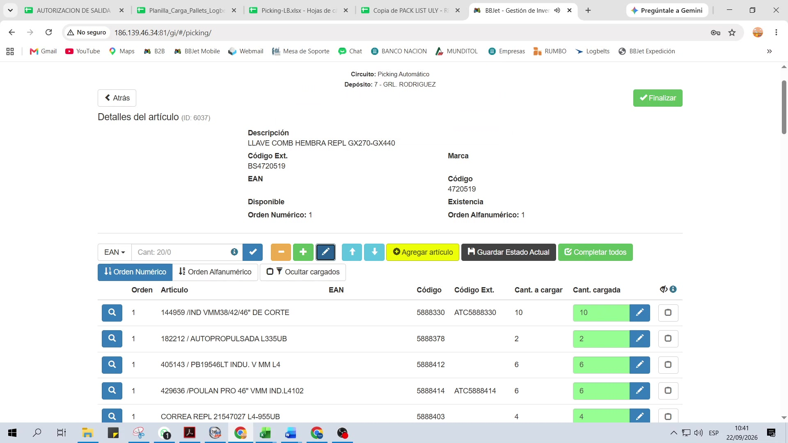
PreRemito_carga_picking_con_actualizacion_del_stock.mp4 · 04:57 · Captura de referencia, clic para ampliar.5. Resolver alertas en PalJet
Importar la orden en Preparado de Pedido. Una alerta de existencia requiere revisar físico y autorización; no continuar automáticamente.
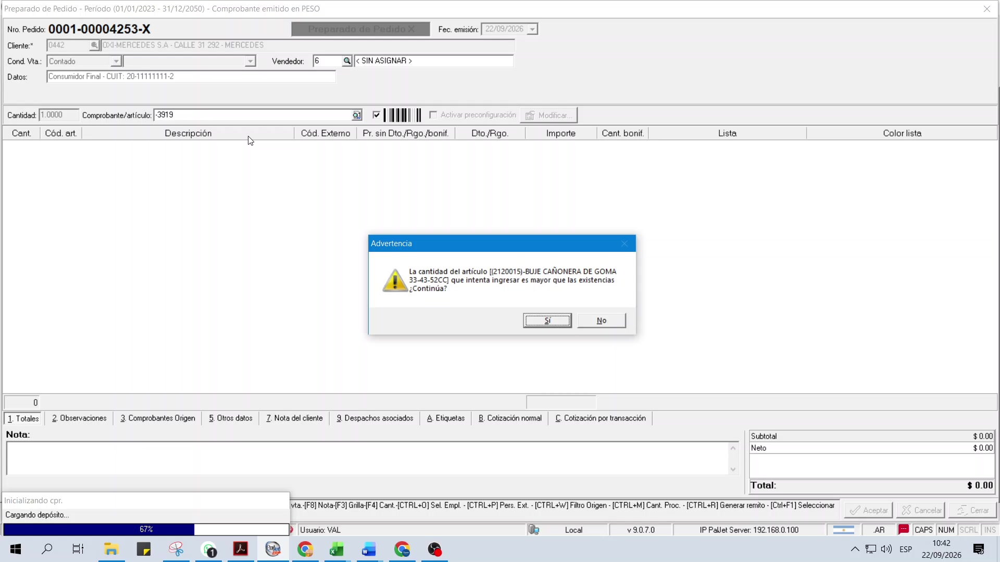
PreRemito_carga_picking_con_actualizacion_del_stock.mp4 · 06:12 · Captura de referencia, clic para ampliar.Abrir video completo
G03 Registrar un ajuste de stock autorizado
Aplicación relevada: diferencia física validada durante el remitaje y regularización. Sin mercadería física o autorización de Gerencia, detenerse. La captura no demuestra por sí sola la autorización.
1. Abrir Ajuste de stock
Ingresar a Inventario → Comprobantes → Ajuste de stock.
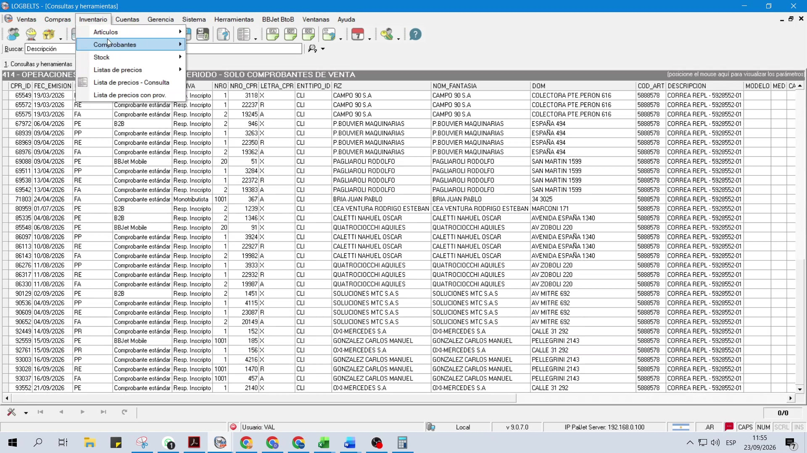
Ajuste de stock.mp4 · 00:06 · Captura de referencia, clic para ampliar.2. Elegir el depósito
Seleccionar el depósito donde se contó físicamente el artículo.
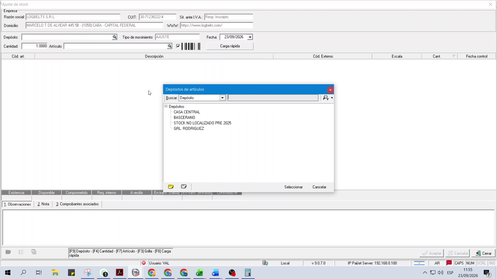
Ajuste de stock.mp4 · 00:12 · Captura de referencia, clic para ampliar.3. Comprobar cabecera
Revisar depósito, fecha y tipo de movimiento. El ejemplo usa AJUSTE; no define todos los tipos posibles.
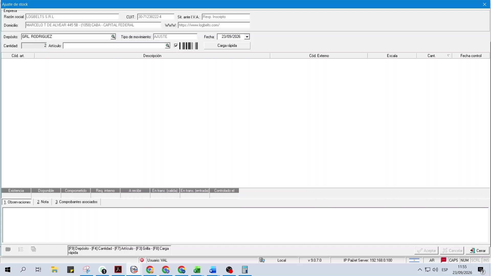
Ajuste de stock.mp4 · 00:17 · Captura de referencia, clic para ampliar.4. Cargar artículo y diferencia
Verificar código y descripción. Cargar la diferencia autorizada, no el total físico.
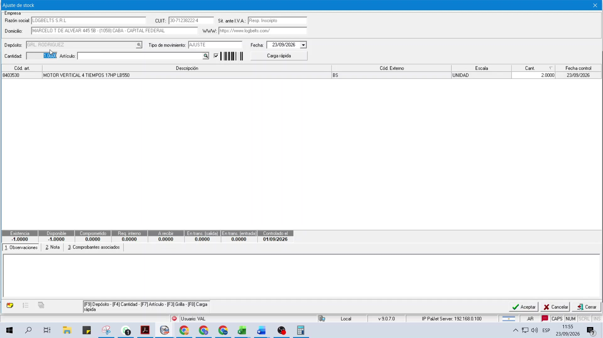
Ajuste de stock.mp4 · 00:22 · Captura de referencia, clic para ampliar.5. Revisar la grilla
Verificar todos los renglones antes de aceptar. Luego comprobar existencia y conservar causa y autorización.
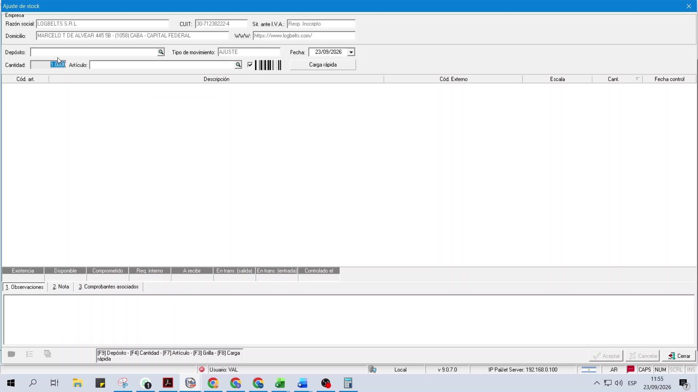
Ajuste de stock.mp4 · 00:28 · Captura de referencia, clic para ampliar.Abrir video completo
G04 Mover pocos artículos entre depósitos
La respuesta de impresión del ejemplo no constituye una regla general. Elegir según la documentación requerida.
1. Consultar la existencia
Buscar el código y verificar disponibilidad por depósito.
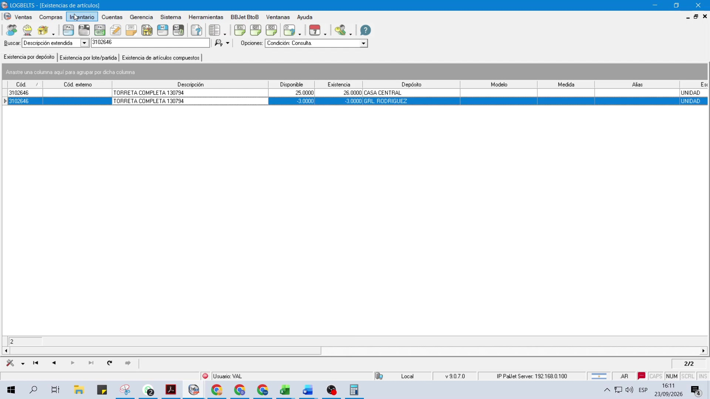
movimiento de deposito de pocos articulos.mp4 · 00:03 · Captura de referencia, clic para ampliar.2. Seleccionar depósitos
Abrir Remito Interno y seleccionar origen y destino.
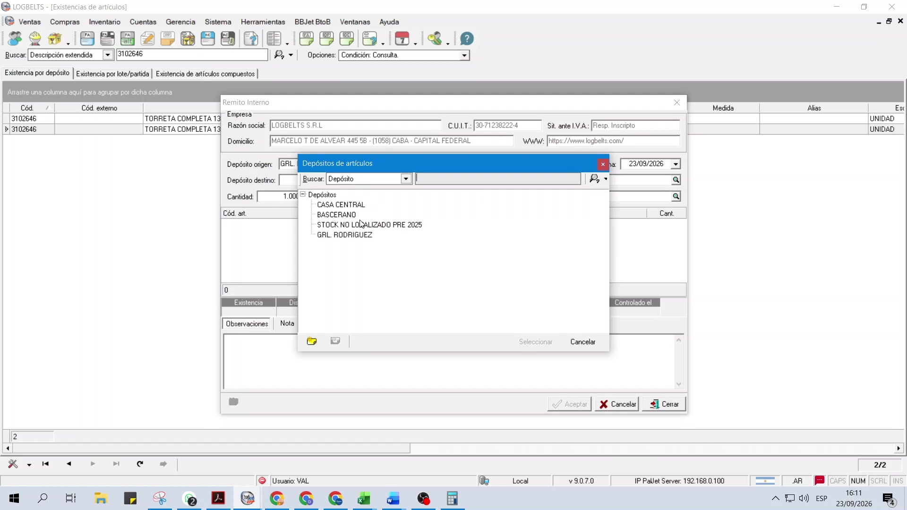
movimiento de deposito de pocos articulos.mp4 · 00:08 · Captura de referencia, clic para ampliar.3. Revisar origen y destino
Origen es donde sale; destino es donde se recibe. No invertirlos.
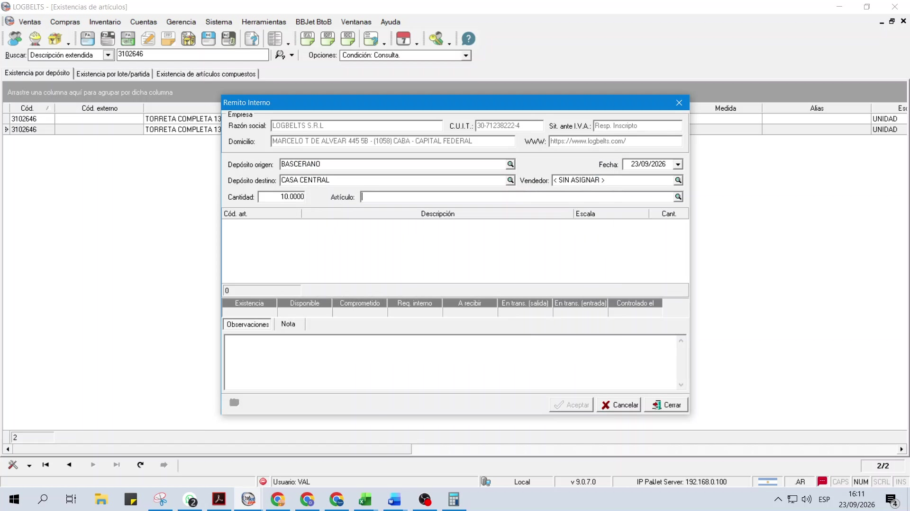
movimiento de deposito de pocos articulos.mp4 · 00:15 · Captura de referencia, clic para ampliar.4. Cargar y verificar el artículo
Ingresar cantidad y código. Comprobar descripción y aceptar solo tras validar. Luego consultar ambos depósitos.
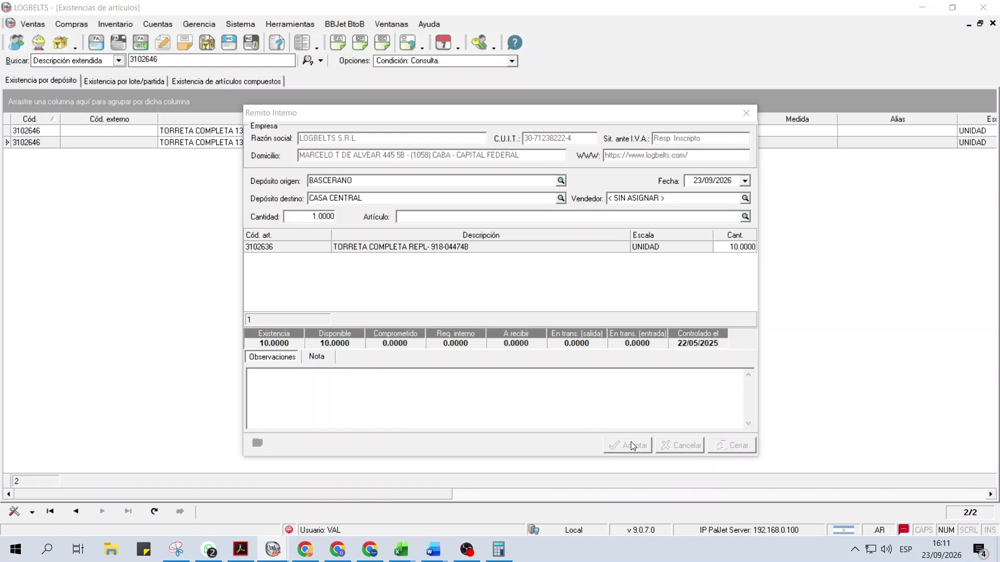
movimiento de deposito de pocos articulos.mp4 · 00:28 · Captura de referencia, clic para ampliar.Abrir video completo
G05 Cargar varios artículos uno a uno
No reutilizar los códigos o cantidades de la grabación.
1. Definir el destino
Seleccionar el depósito que recibe la mercadería.
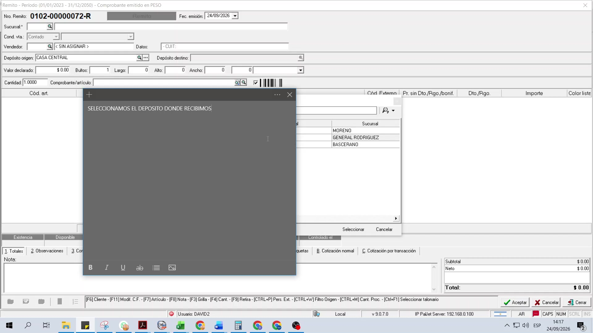
Movimiento de mercaderia uno a uno.mp4 · 00:44 · Captura de referencia, clic para ampliar.2. Definir el origen
Seleccionar el depósito que entrega la mercadería.
Movimiento de mercaderia uno a uno.mp4 · 01:16 · Captura de referencia, clic para ampliar.3. Ingresar cada renglón
Cargar cantidad y código. Comprobar que aparezca la descripción esperada.
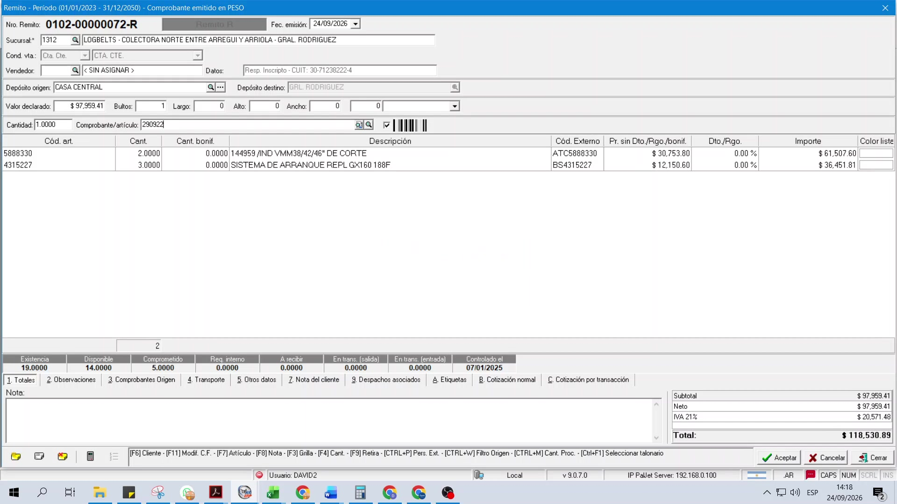
Movimiento de mercaderia uno a uno.mp4 · 01:50 · Captura de referencia, clic para ampliar.4. Revisar toda la lista
Repetir hasta completar el movimiento. Revisar cantidades y ambos depósitos antes de aceptar y comprobar existencias.
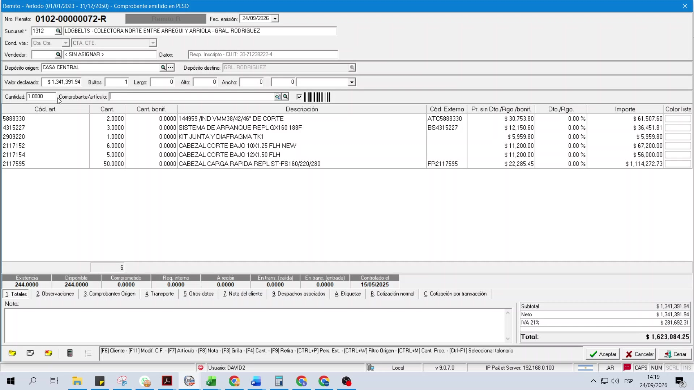
Movimiento de mercaderia uno a uno.mp4 · 02:24 · Captura de referencia, clic para ampliar.Abrir video completo
G06 Importar un movimiento desde Excel
La plantilla de carga no está entre los archivos aportados. Debe obtenerse la plantilla operativa vigente antes de ejecutar este método. No crear una sustituta sin validar el formato.
1. Preparar la plantilla
Usar CARGA DE PEDIDOS EXCEL y conservar las columnas COD_ART y CANTIDAD.
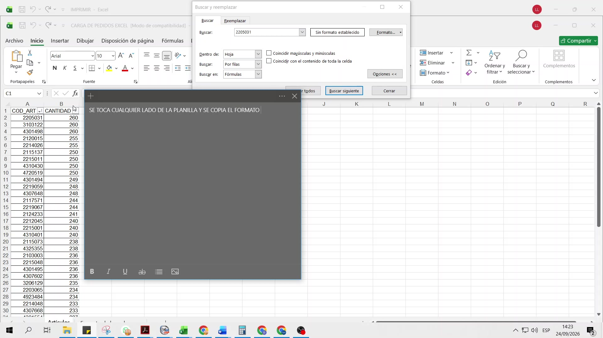
Movimiento interno por remito a traves de excel.mp4 · 02:10 · Captura de referencia, clic para ampliar.2. Alinear códigos y cantidades
Comprobar cada fila y mantener el formato. Guardar y cerrar el Excel antes de importar.
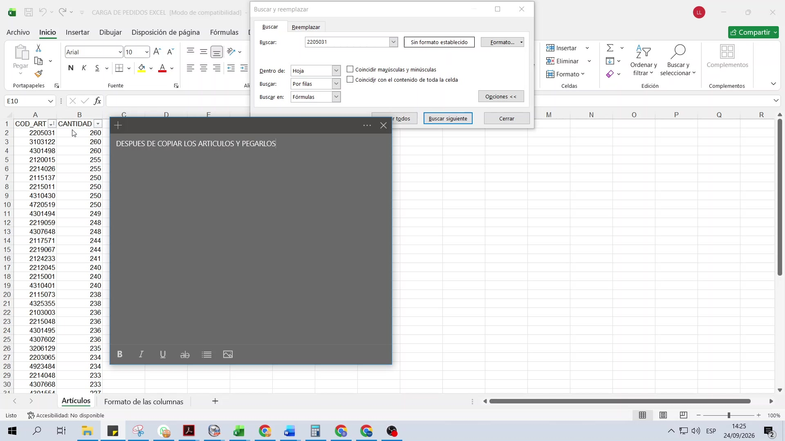
Movimiento interno por remito a traves de excel.mp4 · 03:46 · Captura de referencia, clic para ampliar.3. Importar en PalJet
En el remito interno, verificar depósitos e ingresar // en Comprobante/artículo. Elegir el archivo preparado y esperar la carga.
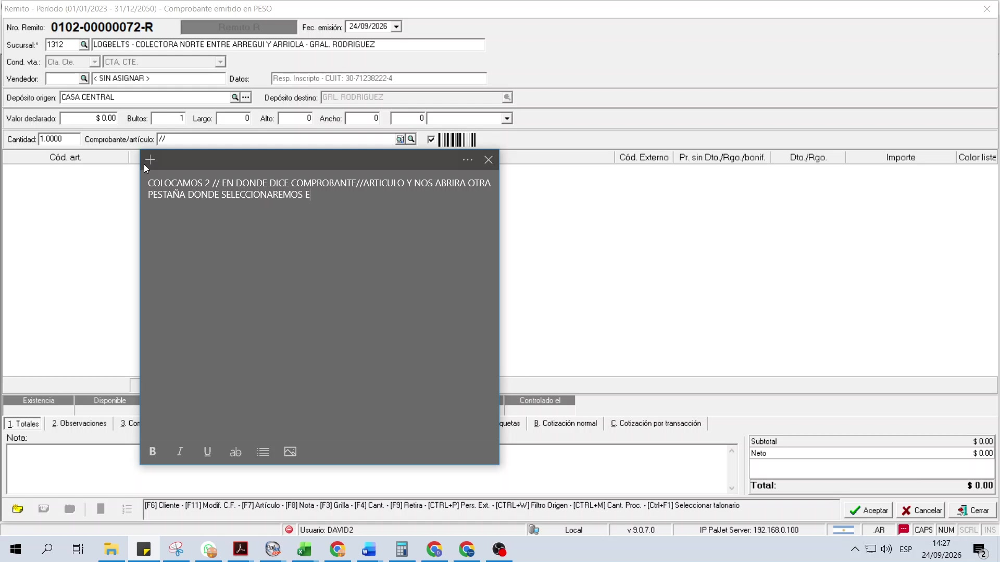
Movimiento interno por remito a traves de excel.mp4 · 05:27 · Captura de referencia, clic para ampliar.4. Comparar la cantidad de filas
Descontar el encabezado. Si no coincide el número de renglones, buscar el código faltante antes de aceptar.
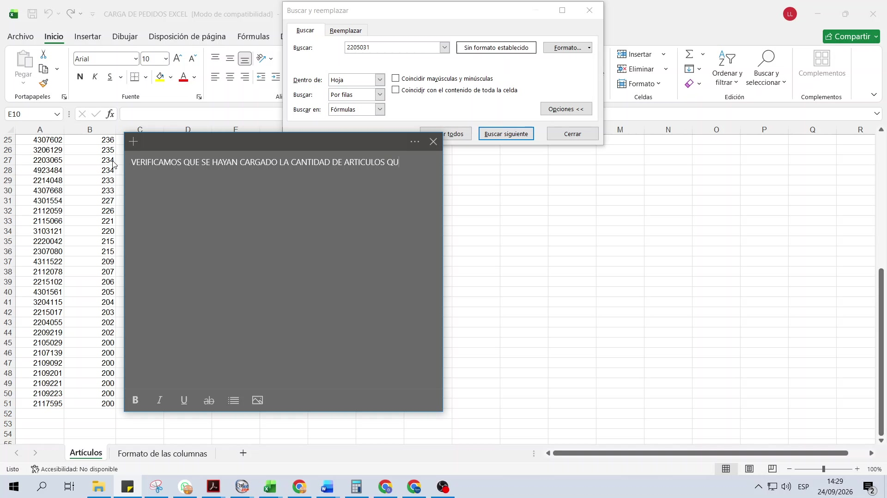
Movimiento interno por remito a traves de excel.mp4 · 07:08 · Captura de referencia, clic para ampliar.5. Validar el resultado cargado
Revisar códigos, cantidades y descripciones. Resolver las alertas antes de confirmar el remito interno.
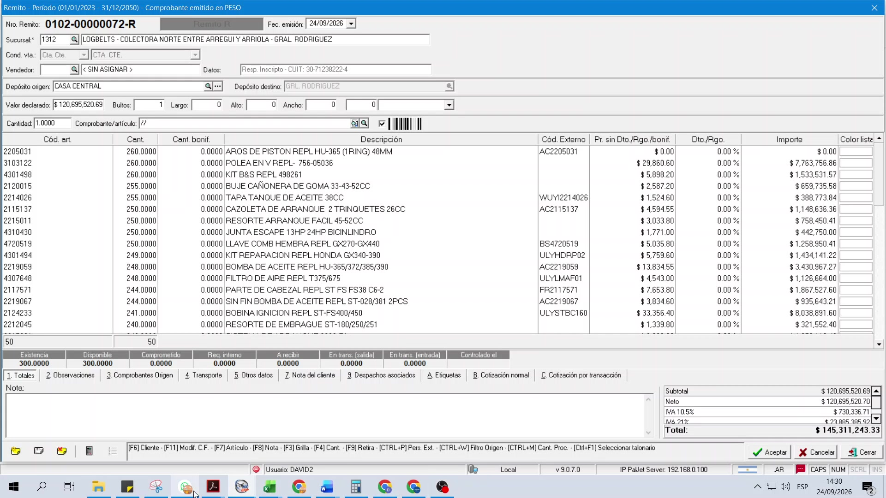
Movimiento interno por remito a traves de excel.mp4 · 08:55 · Captura de referencia, clic para ampliar.Abrir video completo
G07 Investigar movimientos de un artículo
Esta consulta apoya P03; no sustituye el cruce completo de las cuatro fuentes. El reporte comercial de ventas queda fuera de la rutina del puesto.
1. Identificar artículo y depósitos
Buscar el código en Existencias de artículos.
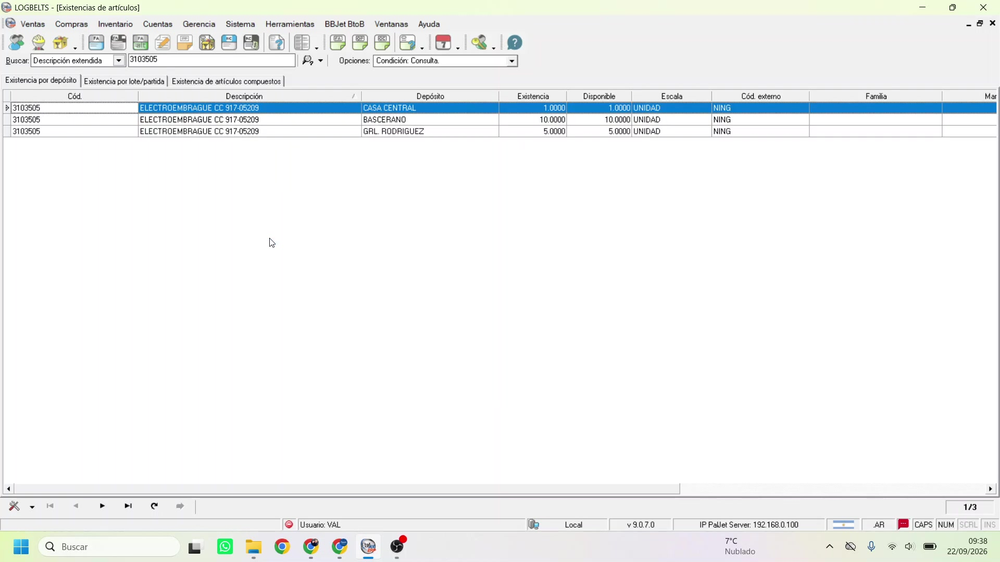
WhatsApp Video 2026-09-22 at 9.46.38 AM.mp4 · 00:19 · Captura de referencia, clic para ampliar.2. Definir fechas y depósito
Abrir movimientos del artículo, establecer el período y consultar el depósito pertinente.
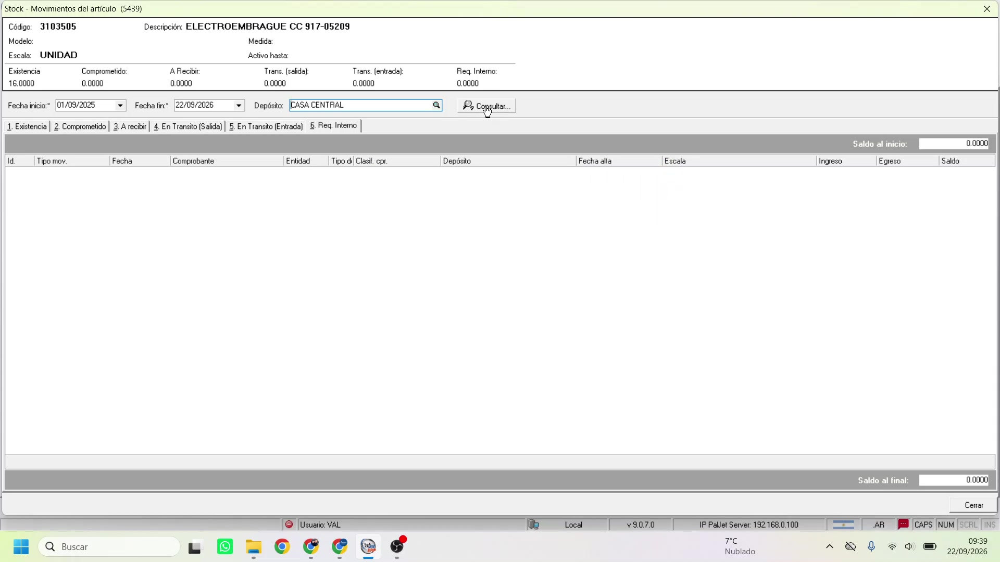
WhatsApp Video 2026-09-22 at 9.46.38 AM.mp4 · 00:53 · Captura de referencia, clic para ampliar.3. Interpretar los movimientos
Leer tipo de comprobante, ingresos y egresos. No confundir un traslado con una venta.
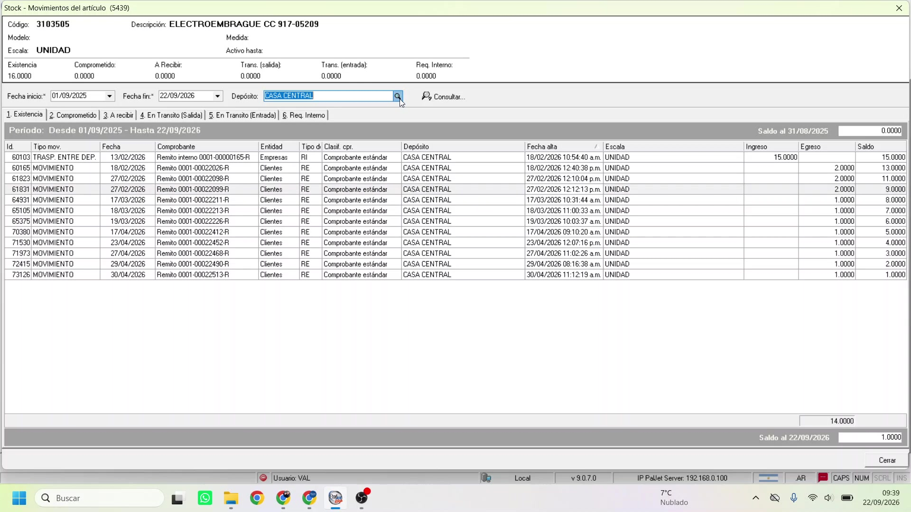
WhatsApp Video 2026-09-22 at 9.46.38 AM.mp4 · 01:32 · Captura de referencia, clic para ampliar.4. Revisar códigos equivalentes
Si hay una equivalencia confirmada, repetir con el código relacionado manteniendo el período.
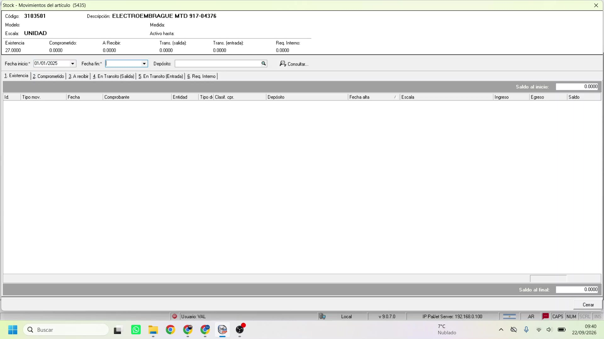
WhatsApp Video 2026-09-22 at 9.46.38 AM.mp4 · 02:14 · Captura de referencia, clic para ampliar.5. Consultar otros depósitos
Cambiar de depósito cuando la investigación lo requiera y contrastar con el físico y las planillas.
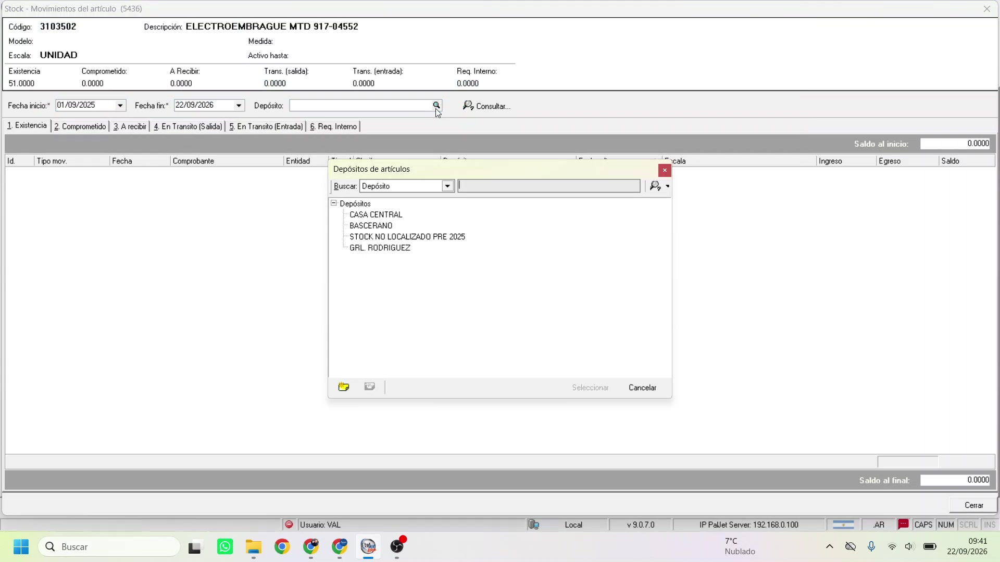
WhatsApp Video 2026-09-22 at 9.46.38 AM.mp4 · 02:55 · Captura de referencia, clic para ampliar.Abrir video completo
Cómo mejorar y mantener este manual
- Mantener esta estructura de dos niveles: rutina breve y fichas detalladas. Evitar mezclar estadísticas históricas o informes de auditoría con los pasos diarios.
- Grabar microvideos de una sola tarea. Empezar mostrando qué se necesita y terminar mostrando el resultado comprobado.
- Añadir capturas únicamente en decisiones o campos difíciles: cliente, código, cantidad, depósito, confirmación y mensaje de error. Evitar imágenes decorativas.
- En una segunda edición, recortar las pantallas y señalar el campo exacto con un número o flecha, luego de validar cada clic. Las capturas actuales conservan la pantalla original.
- Fotografiar zonas reales: recepción, pedidos en espera, mesa de picking, reserva y ejemplo de etiqueta correcta. No hay fotos de estas zonas en las fuentes revisadas.
- Usar una copia de entrenamiento con datos de prueba o anonimizados. Las grabaciones y capturas actuales contienen datos operativos de uso interno.
- Asignar un responsable del manual y un reemplazo por tarea. Revisar las fichas cuando cambie el sistema o el circuito.
- Registrar versión, fecha, cambio, quién revisó y quién aprobó. Los enlaces a videos de este paquete funcionan sin conexión si se conserva la carpeta completa.
Capacitación propuesta
- Leer la rutina y reconocer qué decide cada rol.
- Observar al responsable ejecutar un pedido completo.
- Ejecutar un caso supervisado, usando las fichas y sin asumir autorizaciones.
- Practicar un faltante y una alerta de stock con un caso seguro de capacitación.
- Confirmar que la persona puede explicar qué verificar, dónde queda el registro y cuándo detenerse.
- Registrar por tarea: observado / ejecutado con ayuda / ejecutado y revisado. La designación del reemplazo corresponde a Gerencia.
Puntos a validar antes de aprobar
| Punto | Decisión o evidencia pendiente |
|---|
| Remitaje y stock | Mostrar el cierre completo y comprobar en qué comprobante impacta el stock en la configuración vigente. |
| Ajustes fuera del remitaje | La auditoría menciona ajustes ante traslados, pero LOG-12 los limita al remitaje. Definir alcance con Gerencia. |
| Control de carga | Lineamientos v3 aún dicen propuesta; auditoría y campo del 24/09 indican transferencia al Controlador. Confirmar vigencia. |
| Filtro de pedidos | Confirmar estado exacto: algunas notas crudas contradicen al mapa y los videos. |
| Recepción e importaciones | Completar responsables, controles y alta de artículos. No hay tutorial íntegro. |
| Agregados cerrados | Definir regla única, documentación y corte horario. |
| Valor declarado | Validar con Administración/Gerencia el criterio; las notas registran sin IVA y una verificación pendiente. |
| Planillas del puesto | Indicar ubicación compartida y acceso de autorización, picking, pallets y plantilla de importación. |
| Seguridad y reserva | Validar el método y personal habilitado para bajar mercadería de reserva. |
Fuentes y alcance de revisión
Se extrajo texto de 64 archivos Word, Excel, Markdown y TXT de las dos carpetas originales para localizar material del puesto. La redacción se apoya en la auditoría específica, el mapa del proceso, las notas recientes, los lineamientos y las guías de video. Extracción no significa lectura visual íntegra de todos los documentos.
Se inspeccionaron 60 capturas distribuidas entre los diez videos. Se seleccionaron 32 para las siete guías. No se transcribió el audio ni se verificó cada segundo de las grabaciones. Los nombres originales y tiempos se conservan en cada figura y en el índice de videos.
- Auditoría de tareas de Encargado/a de depósito v1.1, 24/09/2026: inventario del puesto y límites.
- LB-PRO-001 y anexo: circuito, responsables y excepciones.
- Notas del 23 y 24/09/2026: actualizaciones sobre control de carga, recepción, faltantes y salida.
- Lineamientos de Depósito v3: responsabilidades y control diario; algunas novedades quedaron desactualizadas frente al 24/09.
- Once guías escritas y diez videos: pantallas y acciones en PalJet/BBJet.
Se excluyeron del cuerpo del manual finanzas, scripts comerciales, casos de clientes, porcentajes de fricción, nombres personales e historial de errores. Los casos temporales y las propuestas no se presentan como reglas aprobadas.
Corrección de alcance del usuario: no hay conteo anual y las devoluciones pertenecen a otra área. Esta aclaración prevalece sobre las referencias históricas que atribuían esas tareas al puesto.